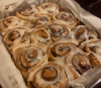

Cinnamon Roll
by Tashkyn

Soft, fluffy rolls filled with cinnamon and brown sugar, topped with sweet cream cheese frosting (8-10 servings).

Soft, fluffy rolls filled with cinnamon and brown sugar, topped with sweet cream cheese frosting (8-10 servings).
These cinnamon rolls were amazing! They were soft, sweet, and full of cinnamon flavor. The cream cheese frosting made them even better!
The cinnamon rolls were okay, but they were too sweet and a little dry. I liked the cinnamon filling, but I wish there was less frosting. I probably would not make them again.
The cinnamon rolls looked great, but they were a little too doughy in the middle. The cinnamon flavor was nice, and the frosting was good.